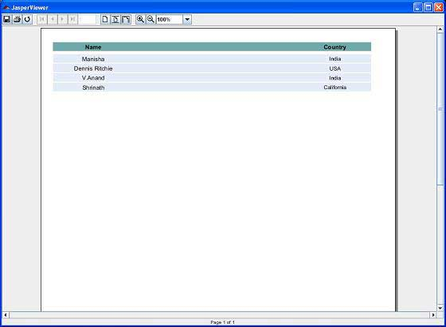

Jasper Report - View And Print Reports
The output of the report filling process JasperPrint objects can be viewed using a built-in viewer component, or printed or exported to more popular document formats like PDF, HTML, RTF, XLS, ODT, CSV, or XML. Viewing and printing of the Jasper documents will be covered in this chapter. Exporting will be covered in the next chapter Export Reports.
Viewing Reports
JasperReport provides a built-in viewer for viewing the generated reports in its original format. It is a swing based component and other Java applications can integrate this component without having to export the documents to other formats in order to be viewed or printed. The net.sf.jasperreports.view.JRViewer class represents this visual component. This class can also be customized as per the application needs, by subclassing it.
JasperReports also has a Swing application that uses the visual component for viewing the reports. This application helps view reports in the same format as *.jrprint is produced. This Swing application is implemented in the class net.sf.jasperreports.view.JasperViewer. To use this, we can wrap this into an ANT target, to view the report.
Viewing the generated Report
The following example demonstrates how to view a report using the JasperViewer class.
Let's write a report template. The contents of the JRXML file (C:\tools\jasperreports-5.0.1\test\jasper_report_template.jrxml) are as below:
<?xml version="1.0" encoding="UTF-8"?>
<!DOCTYPE jasperReport PUBLIC "//JasperReports//DTD Report Design//EN"
"http://jasperreports.sourceforge.net/dtds/jasperreport.dtd">
<jasperReport xmlns="http://jasperreports.sourceforge.net/jasperreports"
xmlns:xsi="http://www.w3.org/2001/XMLSchema-instance"
xsi:schemaLocation="http://jasperreports.sourceforge.net/jasperreports
http://jasperreports.sourceforge.net/xsd/jasperreport.xsd"
name="jasper_report_template" language="groovy" pageWidth="595"
pageHeight="842" columnWidth="555" leftMargin="20" rightMargin="20"
topMargin="20" bottomMargin="20">
<queryString>
<![CDATA[]]>
</queryString>
<field name="country" class="java.lang.String">
<fieldDescription><![CDATA[country]]></fieldDescription>
</field>
<field name="name" class="java.lang.String">
<fieldDescription><![CDATA[name]]></fieldDescription>
</field>
<columnHeader>
<band height="23">
<staticText>
<reportElement mode="Opaque" x="0" y="3" width="535"
height="15" backcolor="#70A9A9" />
<box>
<bottomPen lineWidth="1.0" lineColor="#CCCCCC" />
</box>
<textElement />
<text><![CDATA[]]> </text>
</staticText>
<staticText>
<reportElement x="414" y="3" width="121" height="15" />
<textElement textAlignment="Center"
verticalAlignment="Middle">
<font isBold="true" />
</textElement>
<text><![CDATA[Country]]></text>
</staticText>
<staticText>
<reportElement x="0" y="3" width="136" height="15" />
<textElement textAlignment="Center"
verticalAlignment="Middle">
<font isBold="true" />
</textElement>
<text><![CDATA[Name]]></text>
</staticText>
</band>
</columnHeader>
<detail>
<band height="16">
<staticText>
<reportElement mode="Opaque" x="0" y="0" width="535"
height="14" backcolor="#E5ECF9" />
<box>
<bottomPen lineWidth="0.25" lineColor="#CCCCCC" />
</box>
<textElement />
<text><![CDATA[]]> </text>
</staticText>
<textField>
<reportElement x="414" y="0" width="121" height="15" />
<textElement textAlignment="Center"
verticalAlignment="Middle">
<font size="9" />
</textElement>
<textFieldExpression class="java.lang.String">
<![CDATA[$F{country}]]>
</textFieldExpression>
</textField>
<textField>
<reportElement x="0" y="0" width="136" height="15" />
<textElement textAlignment="Center"
verticalAlignment="Middle" />
<textFieldExpression class="java.lang.String">
<![CDATA[$F{name}]]>
</textFieldExpression>
</textField>
</band>
</detail>
</jasperReport>
Next, let's pass a collection of Java data objects (Java beans), to the Jasper Report Engine, to fill this compiled report.
Write a POJO DataBean.java which represents the data object (Java bean). This class defines two String objects name and country. Save it to directory C:\tools\jasperreports-5.0.1\test\src\com\tutorialspoint.
package com.tutorialspoint;
public class DataBean {
private String name;
private String country;
public String getName() {
return name;
}
public void setName(String name) {
this.name = name;
}
public String getCountry() {
return country;
}
public void setCountry(String country) {
this.country = country;
}
}
Write a class DataBeanList.java which has business logic to generate a collection of java bean objects. This is further passed to the Jasper report engine, to generate the report. Here we are adding 4 DataBean objects in the List. Save it to directory C:\tools\jasperreports-5.0.1\test\src\com\tutorialspoint.
package com.tutorialspoint;
import java.util.ArrayList;
public class DataBeanList {
public ArrayList<DataBean> getDataBeanList() {
ArrayList<DataBean> dataBeanList = new ArrayList<DataBean>();
dataBeanList.add(produce("Manisha", "India"));
dataBeanList.add(produce("Dennis Ritchie", "USA"));
dataBeanList.add(produce("V.Anand", "India"));
dataBeanList.add(produce("Shrinath", "California"));
return dataBeanList;
}
/**
* This method returns a DataBean object,
* with name and country set in it.
*/
private DataBean produce(String name, String country) {
DataBean dataBean = new DataBean();
dataBean.setName(name);
dataBean.setCountry(country);
return dataBean;
}
}
Write a main class file JasperReportFill.java, which gets the java bean collection from the class (DataBeanList) and passes it to the Jasper report engine, to fill the report template. Save it to directory C:\tools\jasperreports-5.0.1\test\src\com\tutorialspoint.
package com.tutorialspoint;
import java.util.ArrayList;
import java.util.HashMap;
import java.util.Map;
import net.sf.jasperreports.engine.JRException;
import net.sf.jasperreports.engine.JasperFillManager;
import net.sf.jasperreports.engine.data.JRBeanCollectionDataSource;
public class JasperReportFill {
@SuppressWarnings("unchecked")
public static void main(String[] args) {
String sourceFileName =
"c://tools/jasperreports-5.0.1/test/jasper_report_template.jasper";
DataBeanList DataBeanList = new DataBeanList();
ArrayList<DataBean> dataList = DataBeanList.getDataBeanList();
JRBeanCollectionDataSource beanColDataSource =
new JRBeanCollectionDataSource(dataList);
Map parameters = new HashMap();
try {
JasperFillManager.fillReportToFile(
sourceFileName,
parameters,
beanColDataSource);
} catch (JRException e) {
e.printStackTrace();
}
}
}
Let's write a target viewFillReport to the build.xml file. The build.xml file is as follows:
The import file - baseBuild.xml is picked from chapter Environment Setup and should be placed in the same directory as the build.xml.
<?xml version="1.0" encoding="UTF-8"?>
<project name="JasperReportTest" default="viewFillReport" basedir=".">
<import file="baseBuild.xml"/>
<target name="viewFillReport" depends="compile,compilereportdesing,run"
description="Launches the report viewer
to preview the report stored in the .JRprint file.">
<java classname="net.sf.jasperreports.view.JasperViewer" fork="true">
<arg value="-F${file.name}.JRprint" />
<classpath refid="classpath" />
</java>
</target>
<target name="compilereportdesing"
description="Compiles the JXML file and
produces the .jasper file.">
<taskdef name="jrc"
classname="net.sf.jasperreports.ant.JRAntCompileTask">
<classpath refid="classpath" />
</taskdef>
<jrc destdir=".">
<src>
<fileset dir=".">
<include name="*.jrxml" />
</fileset>
</src>
<classpath refid="classpath" />
</jrc>
</target>
</project>
Next, let's open command line window and go to the directory where build.xml is placed. Finally execute the command ant -Dmain-class=com.tutorialspoint.JasperReportFill (viewFillReport is the default target). As a result we see a JasperViewer window as in the screen below:
Printing Reports
We can print the documents generated by the JasperReports library (in their proprietary format i.e JasperPrint objects) using the net.sf.jasperreports.engine.JasperPrintManager class. This is a facade class that relies on the Java 2 Printing API. We can also print the documents once the JasperReport documents are exported to other formats such as HTML or PDF.
Printing the generated Report
The following code demonstrates the printing of report. Let's update our existing class JasperReportFill. We will use JasperPrintManager.printReport() method. This method takes source file name (here we pass the .jrprint file which we generate in the previous step using the method JasperFillManager.fillReportToFile()) as first parameter. The second parameter is the boolean for displaying the standard print dialog (we have set it to true here).
package com.tutorialspoint;
import java.util.ArrayList;
import java.util.HashMap;
import java.util.Map;
import net.sf.jasperreports.engine.JRException;
import net.sf.jasperreports.engine.JasperFillManager;
import net.sf.jasperreports.engine.JasperPrintManager;
import net.sf.jasperreports.engine.data.JRBeanCollectionDataSource;
public class JasperReportFill {
@SuppressWarnings("unchecked")
public static void main(String[] args) {
String sourceFileName = "c://tools/jasperreports-5.0.1/" +
"test/jasper_report_template.jasper";
String printFileName = null;
DataBeanList DataBeanList = new DataBeanList();
ArrayList dataList = DataBeanList.getDataBeanList();
JRBeanCollectionDataSource beanColDataSource =
new JRBeanCollectionDataSource(dataList);
Map parameters = new HashMap();
try {
printFileName = JasperFillManager.fillReportToFile(
sourceFileName,
parameters,
beanColDataSource);
if(printFileName != null){
JasperPrintManager.printReport(
printFileName, true);
}
} catch (JRException e) {
e.printStackTrace();
}
}
}
Now, let's save this file to directory C:\tools\jasperreports-5.0.1\test\src\com\tutorialspoint. We will compile and execute this file using ANT. The contents of build.xml are as below:
<?xml version="1.0" encoding="UTF-8"?>
<project name="JasperReportTest" default="executereport" basedir=".">
<import file="baseBuild.xml"/>
<target name="executereport"
depends="compile,compilereportdesing,run">
<echo message="Im here"/>
</target>
<target name="compilereportdesing"
description="Compiles the JXML file and
produces the .jasper file.">
<taskdef name="jrc"
classname="net.sf.jasperreports.ant.JRAntCompileTask">
<classpath refid="classpath" />
</taskdef>
<jrc destdir=".">
<src>
<fileset dir=".">
<include name="*.jrxml" />
</fileset>
</src>
<classpath refid="classpath" />
</jrc>
</target>
</project>
Next, let's open command prompt and go to the directory where build.xml is placed. Finally execute the command ant -Dmain-class=com.tutorialspoint.JasperReportPrint. As a result, a print dialog box appears. Click ok to print the document.